AbstractThe fracture properties of fiber-reinforced mortar were determined in this paper using three-point bend tests on notched beams and employing the two-parameter fracture model (TPFM). A comparison was made between two casting methods: conventional casting and pump-driven extrusion. The hypothesis suggested that the extrusion process would preferentially align fibers parallel to the tensile stresses, thereby enhancing the concrete’s fracture properties. The results corroborated the enhancement of concrete's ductility and post-peak behavior when fibers were added, consistent with previous studies. However, this study revealed a novel insight that preferential fiber alignment achieved through extrusion could further enhance the fracture properties of concrete. Furthermore, digital image correlation was used to obtain the entire displacement field during testing. The crack propagation process and the strain localization were investigated, and the fracture toughness considering crack deflection was calculated using a modified two parameter model (MTPM). The results showed that extrusion-based specimens exhibited more deflected cracks, affirming the hypothesis that fiber alignment via extrusion influenced the crack propagation, thereby enhancing the fracture properties of the composite.Metrics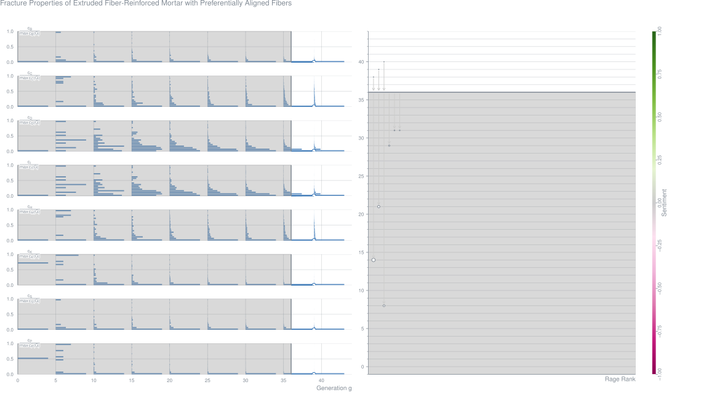
Modeling, Feedforward-Control, and Constrained Trajectory-Generation for a Concrete-Conveyance-System (2023-08)
AbstractAutomated fabrication of concrete elements requires precise control of outgoing volume flow. Since measurements ofthe volume flow or the total extruded volume are challenging during production, a feedforward control is required, which in turn necessitates a model of the dynamics at hand. In this paper, a concrete conveyance system with two pumps is considered. These are mounted at the inlet and outlet of the hose, respectively. Based on previous work, a dynamical model with concentrated parameters is derived, which is motivated on the general distributed dynamics oftwo-phase flow. The model is validated by experiments, with parameters calculated by a tailored estimation approach. Based thereon, a feedforward control approach is presented and tested in simulation, exploiting the approximate flatness of the system. The flat parametrization is then used for constrained, smooth setpoint transition ofthe volume flow with minimal transition time.Metrics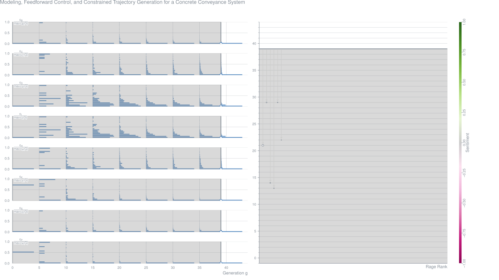
Experimental Study of the In-Situ Rebar-Splicing-Technique to Reinforce 3D Printed Concrete in Vertical Directions (2023-08)
Xiangpeng Cao,
Shiheng Yu,
Hongzhi Cui Journal Article – Construction and Building Materials, Vol. 400
AbstractThis study proposed the in-situ rebar splicing technique (ISRST) to address the challenge of vertical continuous reinforcements in the 3D concrete printing. The technique involves splicing inserted rebar segments in stacked mortar layers with high-fluidity material during the printing process. Epoxy resin worked as the experimental splicing material and resulted in successful outcomes. It effectively eliminated visible gaps surrounding the directly inserted rebars and improved the bonding strength to the composite by 315.7%. Pull-out tests concluded that the spliced rebars with 40 mm overlapping performed well, with a splicing ratio of 93.2% and a direct tensile force of 12.52 kN. Moreover, the in-situ-spliced rebars effectively reinforced the cast and printed beams with flexural behavior improvements of 85.8% and 131.6%, respectively. The ISRST was proven successful through simulation and is technically feasible for hybridizing with a 3D printing system to manufacture rebar-reinforced concrete structures.Metrics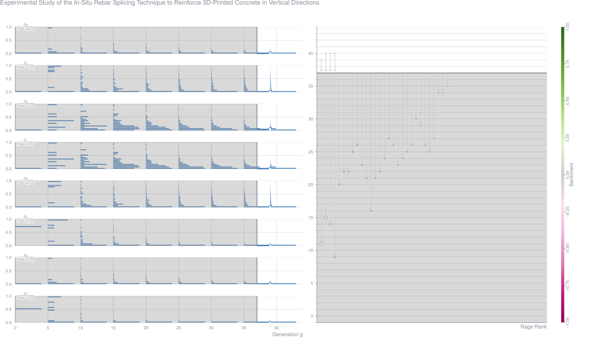
Study on the Durability of 3D Printed Calcium-Sulphoaluminate Cement-Based Materials Related to Rheology-Control (2023-08)
Mingxu Chen,
Yuan Jin,
Keke Sun,
Shoude Wang,
Piqi Zhao,
Liang Wang,
Junzhe Liu,
Gongbing Yue,
Qiuyi Li,
Lingchao Lu Journal Article – Journal of Materials Research and Technology
AbstractSince 3D printed structure is conducted by the style of dimension reduction, the defects typically occur between the printing layers due to the poor rheological properties, which affects the durability most. This study focuses on exploring the durability of 3D printed calcium sulphoaluminate cement-based materials (CSACMs) with slag powder based on the correlation between printed structures and rheological parameters. Experimental results show that both the static and dynamic yield stress of 3D printed CSACMs exhibits a gradual increase with the slag powder content increases, while the thixotropy improves continually until reaching a maximum content at 15%. In this case, an increase in slag powder content leads to a significant reduction for structure deformation. However, poor printability occurs when the content of slag powder exceeds 15%. Besides, the chloride migration coefficient and maximum electric flux decreases from 7.28×10-12 to 3.27×10-12 m2/s and 1347 to 711 K, respectively, when the content of slag powder increases from 0 to 10%. Meanwhile, the freezing resistance and linear shrinkage are improved. Based on the radar map correlation, structure deformation is significantly influenced by thixotropy, which is a crucial factor that can impact the durability of 3D printed CSACMs. In conclusion, the controllable rheology of 3D printed CSACMs are advantageous for improving the printed structures and durability.Metrics
Influence of Gradation on Extrusion-Based 3D Printing Concrete with Coarse Aggregate (2023-08)
AbstractCoarse aggregate is an indispensable component of concrete, the gradation of which plays an important role in the properties of concrete due to its effect on particle distribution. The extrusion-based 3D concrete printing (3DCP) has become a promising technology while the influence of coarse aggregate gradation on the material design and performance of 3D printed concrete still lack understanding. This study experimentally investigates the fresh and hardened properties of 3D printed concrete with 4.75–20 mm continuous and discontinuous grading coarse aggregates, including flowability, buildability, axial compression, and drying shrinkage. The results reveal that 3D printed concrete with continuous grading performs better on flowability retaining and multilayer structure stacking than that with discontinuous grading. The evaluation coefficient of aggregate particle size is proposed to characterize the average particle size of coarse aggregates with different gradations, which shows linear relationship with coarse aggregate 3D spacing in 3D printed concrete. The current axial compressive stress–strain model for the conventional concrete prediction curve is modified to predict the effect of coarse aggregate gradation on constitutive relationship of 3D printed concrete. The increasing proportion of large-sized coarse aggregates can lead to a reduction in long-term drying shrinkage of 3D printed concrete.Metrics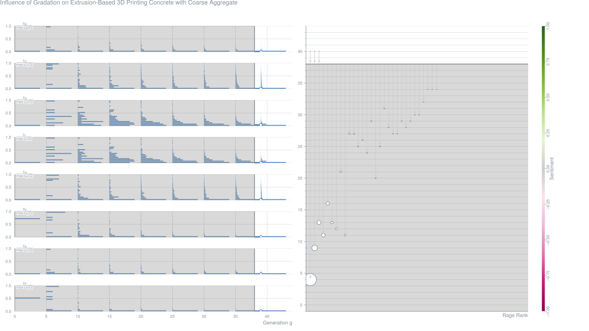
Development of 3D Printed Heavyweight Concrete Containing Magnetite-Aggregate (2023-08)
AbstractThe main objective of this study is to develop 3D printed heavyweight concrete (3DPHWC) to produce elements with a dry density of up to 3500 kg/m3 by replacing natural aggregate (SA) with magnetite aggregate (MA) up to 100%. A comprehensive systematic study was conducted to thoroughly assess mixtures’ mechanical properties, physical proficiency, fresh properties, and printing qualities. The inclusion of MA exhibited the desired fresh properties required for 3D printing and promising physical and mechanical properties. Evaluation of the mechanical properties of designed 3DPHWC indicates that replacing SA with MA increases both cast and printed samples’ strengths. The 3D printed M100 sample achieved higher 28 days flexural and compressive strengths by 18 % and 20 %, respectively, compared to printed control mix (M0). Micro-CT study correspondingly demonstrated improvements in the composites’ porosity, pore size, and pore morphologies. The linear attenuation coefficients (LACs) and half-value layer (HVLs) for slow neutron and gamma-ray were measured to assess radiation shielding characteristics. A significant performance improvement was obtained for slow neutrons by introducing the magnetite aggregate. Unlike slow neutrons, no significant difference was observed between cast and printed samples against γ-rays. Moreover, the effect of porosity on the shielding performance was discussed.
Topology-Optimization to Design Innovative High Thermal Resistance 3D Printed Walls (2023-08)
AbstractTo achieve progress, we need to start thinking differently. This is the key aspect of additive manufacturing (AM) and 3D printing, which can trigger new, unconventional and high-performance designs in any engineering sector. This makes it possible to realize almost any geometry, paving the way to realize topology optimization (TO)-based designs, controlling the material distribution itself, thereby leaving ample room for imagination and optimization. The coupling of TO and AM is a powerful design tool, especially for building envelope components. The latter is the focus of our study as the building sector is among those industries requiring new perspectives and innovations to pursue energy transition and sustainable development. In this frame, AM is expected to be an effective tool to revolutionize the construction industry. AM 3D printed walls (3DPW) have proved to be sustainable, less expensive, and adaptable to various needs. However, without controlling the infill and shape of a 3DPW, its full potential cannot be exploited. This issue might be tackled resorting to TO for the fabrication of innovative engineered building wall elements characterized by reduction of raw material consumption while maximizing thermal resistance. Specifically, the optimization is performed under a fixed available volume and applying material distribution constraints, i.e., robust formulation and overhang constraint, in order to control the wall weight. Thus, the goal is to minimize the thermal conductance, i.e., to maximize the thermal resistance, by constraining the weight of the wall. 2D finite element simulations are carried out on different configurations under the winter design conditions of Naples, South Italy. Optimized designs are compared in terms of thermal conductance and velocity field inside the air cavities, to prove how topology optimization leads to limited air recirculation and thus higher thermal insulation.Metrics
Abstract3D printing of yield stress fluids (i.e., materials able to flow like liquids only beyond a critical stress) is opening new doors in the fields of construction, food or medicine. The usual printing technique consists to extrude and then deposit a filament of yield stress fluid onto the previous layer. One major difficulty is that, during the deposition process, some instabilities may appear and have a catastrophic impact on the final 3D structure. Here we show that these instabilities can be predicted as a function of the material properties and/or the printing parameters. More generally, we study the deposit of a filament from systematic tests with a model yield stress fluid, varying the material yield stress value, the distance between the nozzle and the substrate, the extrusion velocity, the nozzle diameter, and the nozzle displacement velocity. We show that a diversity of patterns arises: drops, discontinuous lines, straight lines, meanders, alternated loops or translated loops. Then, we demonstrate that the transitions (frontier curves) between pattern regions can be predicted by theoretical arguments. Finally, we present a generic diagram predicting the patterns observed as a function of dimensionless numbers depending on the various characteristics of the system. This provides a reference scheme for optimizing practical processes or devising specific deposit patterns, valid for a wide range of conditions and yield stress fluids.Metrics
Geopolymers for 3D Print (2023-08)
P. Hájková,
A. Soukup,
J. Kohout,
E. Kohoutová,
P. Koutník Journal Article – Journal of Physics: Conference Series, Vol. 2568, No. 1
Abstract3D print of building materials has increasing popularity in the construction industry all around the world. However, geopolymer material, which stands out for its high temperature resistance and low CO2 emissions compared to concrete, is very rarely used for 3D printing. This work is focused on a composite material based on a geopolymer binder, which is suitable for 3D printing of building elements. The properties of the developed geopolymer composite and the parameters that influence them are described in detail. One of the most important properties of the geopolymer composite for 3D print is setting time and its influence possibilities. The optimal setting time of the developed geopolymer material was 50 minutes. This composite reached up to 70 MPa at room temperature and 35 MPa after exposure to temperature of 800°C.Metrics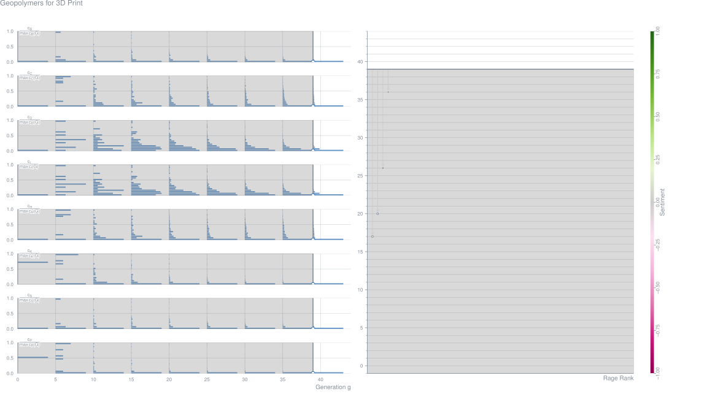
Slag-Modified Fiber-Reinforced Metakaolin-Based Geopolymer for 3D Concrete Printing Application: Evaluating Fresh and Hardened Properties (2023-08)
AbstractExtrusion-based 3D printing of a two-part metakaolin-based geopolymer concrete has a long setting time, which could lead to inadequate structural build-up. This research explores an experimental mix formulation for 3D concrete printing application with reasonable setting time by the inclusion of slag in a metakaolin-based geopolymer activated with sodium trisilicate solution and sodium hydroxide (NaOH). The formulation parameters of the mix are aggregate to binder ratio (A/B) of 1.6, alkaline activator to binder ratio (AA/B) of 0.73, 0.5% fibre content by volume of the mix, 1% superplasticiser by mass of binder, 0.5% viscosity modifying agent (VMA) by mass of binder, water to binder ratio of 0.3, and sodium trisilicate solution: NaOH of 2.0. Fresh and rheological properties of the 3D printed geopolymer concrete (3DPGPC) mixes were characterised, hardened mechanical properties of specimens were evaluated, efflorescence was observed, microstructural identification of reaction products and analytical buildability model performance was validated with 3D prints. The results show interesting fresh properties for printability with slag inclusion and hardened properties are enhanced with slag inclusion. Printability of the mixes is validated with 3DPGPC of 27 and 42 layers of 250 mm diameter columns with mixes 1 and 2 at 0% and 5% slag content, respectively. Also, 17 layers of a rectangular shape and a non-regular shape were printed. Slag inclusion enhanced initial and final setting times, improved hardened properties, reduced efflorescence because of the formation of calcite, and enhanced buildability of 3DPGPC. XRD shows the formation of quartz, muscovite, and calcite peak phases as the reaction product of the hardened 3DPGPC. Also, SEM-EDS show elemental peak height and quantification.Metrics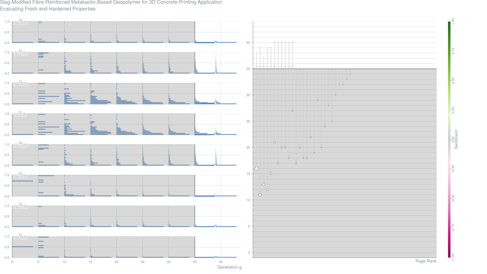
Volume Flow-Based Process-Control for Robotic Additive Manufacturing-Processes in Construction (2023-08)
Lukas Lachmayer,
Nico Müller,
Thilo Herlyn,
Annika Raatz Contribution – IEEE 19th International Conference on Automation Science and Engineering ()
AbstractAdditive manufacturing of concrete components represents an innovative approach to facing today's challenges in construction. However, the reproducibility of concrete-based additive manufacturing processes leaves much to be desired since the geometry of the printed strand is unpredictably affected by environmental influences, material shrinkage, and process flow characteristics. Especially during the manufacturing of large-scale components, the slightest deviation between as-planned and as-printed layer height stacks up. It leads to substantial discrepancies between the designed and printed component. Divergence is even worse when spraying the material instead of extruding since underestimating the layer height lowers the application level within the spray cone, leading to a widened but even more flattened strand in each layer. An online process control can increase the accuracy of additive manufacturing by compensating for such deviations during printing. This paper aims to implement a process control algorithm to compensate for the above-mentioned deviations by adjusting the material volume flow. A 2D laser scanner runs ahead of the printing nozzle to gain exact information on layer height deviations. The error can be calculated and compensated by comparing the real-time information on the actual layer height and the target height set during path planning. As an alternative additive manufacturing process for concrete components, a sprayable insulation foam test setup reduces the effort required to experiment with concrete. The developed process control algorithm was used to 3D print an object of 1 m height. In addition, the influence of different controller settings on the process was investigated. Results show a significant process stability improvement when printing with the proposed control approach.Metrics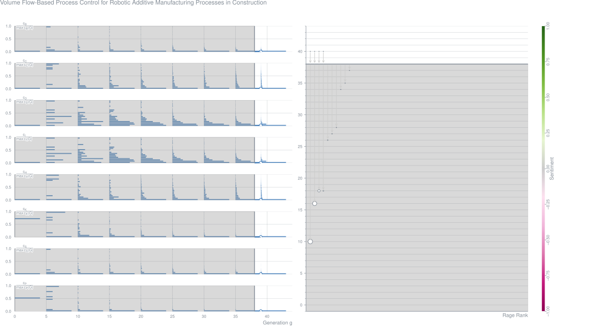
Experimental Investigation of Fresh and Time-Dependent Rheological Properties of 3D Printed Cementitious Material (2023-08)
AbstractUnlike traditional construction processes, three-dimensional cementitious material printing requires more accurate control of the pumping flow rate. To this end, the predictability of the rheological properties of fresh cementitious mixtures and the property change over time are critical for the fabrication process. In this paper, the fresh rheological properties of twenty different mixtures were measured in the large gap viscometer, and three non-Newtonian fluid models (Bingham model, modified Bingham model, and Herschel-Bulkley) were applied to predict the dynamic yield stress and plastic viscosity of each material. The applicability of these models was assessed, and their relative deviation was quantified and discussed. Using the well-established Bingham model, the temporal evolution of the dynamic yield stress and plastic viscosity of the material was then characterized. Based on the measured and predicted rheological properties, an open loop control method was then implemented to harmonize the flow volume per unit length during printing processes to improve the printing quality and buildability of the material.Metrics
Development of a Functional Cementitious Mixture with Expanded Graphite for Automated Spray Construction (2023-08)
AbstractSpray-based three-dimensional (3D) concrete printing is an innovative method to automatically construct structures on vertical and overhead surfaces, which contributes to less labor investment and construction time. On the other hand, expanded graphite is widely known for its high thermal and electrical conductivity as a lightweight ingredient, and thus its potential in functional cementitious materials has been gradually realized in recent years. In this study, a lightweight cementitious material containing expanded graphite has been developed specifically for spray-based 3D concrete printing with added values. Through the characterization and overall evaluation of densities, mechanical and rheological properties, and Joule-heating performance, the appropriate expanded graphite content was determined as 1% by weight of cement. Afterward, silica fume was introduced into the matrix to tailor the rheological properties of the mixtures. The subsequent spray-based printing showed that the tailored mixture had significant improvements in the building capacity and spray quality. On the other hand, it also possessed superior Joule-heating performance than the control mixture without expanded graphite. The potential engineering applications of the developed material include deicing and structural health monitoring, and the compatibility with spray-based 3D concrete printing provides extra values of higher construction efficiency and adaptivity to the structures of complex contours.Metrics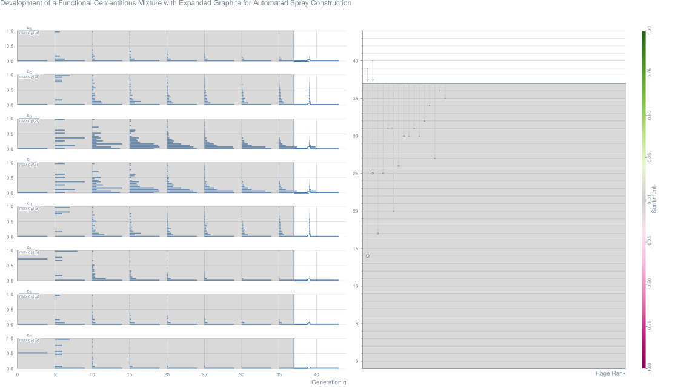
Use of Alccofine 1203 as a Sustainable Supplementary Cementitious Material for Printable Concrete (2023-08)
Aravindhraj Mani,
S. Muthukumar,
K. Sathyanarayanan Journal Article – Materials Today: Proceedings
AbstractMajor climatic shifts and delicate heating effects have given rise to CO2 emissions in the environment at a global level. This is due to the manufacture of cement and other greenhouse gases (GHG). Numerous studies are being done to find alternatives to cement as a means of preventing or reducing this release of GHG. One of the newer construction methods, three-dimensional concrete printing (3DCP), uses more cement for both the binding process and to attain mechanical qualities. The objective of this paper is to provide an overview of the preferences of supplementary cementitious materials (SCMs) and to suggest alccofine-1203 as a partial substitute for cement in the process of 3DCP. Alccofine-1203, one of the SCMs, contains ultra-fine particles with a unique chemical composition that improved cement hydration and pozzolanic activity. In this research finding, cement is partially replaced with alccofine-1203 with various proportions like 2%,4%,6%,8% & 10%. Substituting alccofine-1203, resulted in good workability and showed vital results for slump cone and flowability tests at 6%. Alccofine-1203 replaced mortar cubes performed better than the conventional mortar cubes in terms of mechanical properties because of the presence of calcium and silica in alccofine-1203.Metrics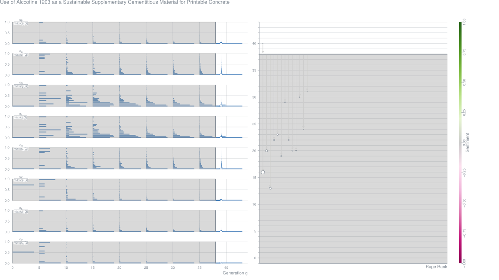
A Prediction of the Printability of Concrete Through Artificial Neural Networks (2023-08)
AbstractDigital Fabrication with Concrete (DFC) is acquiring potential because of the need of a technological advancement in the construction industry. The rheology of concrete finds evident meaning, because of the necessity of “handling” concrete in its early ages, when still fluid, and allowing it to immediately start developing its mechanical performance for the building process to advance. In order to make the material suitable for the printing process, it must comply with the printability requirements that are governed by parameters including yield stress and tensile and shear strength. Nowadays, the study behind the mix of a concrete material that fits all the printing requirements is still something that goes through an iterative trial and error process, due to the difficulty and the novelty that 3D Concrete Printing (3DCP) represents. For this reason, it can be helpful to develop a model, based on experience and the literature, that is able to predict if, for a given concrete mix design and printing process, all the requirements tied to 3DCP are satisfied. The employment of Artificial Intelligence (AI) can represent a solution to it. Applications of AI are very wide: referring to Civil Engineering, AI can be applied to concrete science and technology to handle several different topics including mix proportions, workability and overall mechanical performance, being instrumental to establish and assess multi-parameter correlations among the different involved material and process input parameters. AI tries to mimic the human brain, that is made up of many nerve cells driven by neurons which are in control of the external stimuli. The purpose of the paper is to analyse the printability through the implementation of AI techniques, designing a neural network between the parameters that control the mix composition and rheological properties of printable concrete mixes in the printability window.
Effect of the Superplasticizer-Addition Time on the Fresh Properties of 3D Printed Limestone-Calcined-Clay-Cement (LC³) Concrete (2023-08)
AbstractAlthough 3D concrete printing (3DCP) is considered one of the most significant innovations in the construction sector, its large cement consumption remains an environmental concern. In response, limestone calcined clay cements (LC³) have emerged as a promising alternative to Portland cement (PC) due to their potential for reducing environmental impact. While previous studies have shown the influence of addition timing of superplasticizer (SP) on the fresh performance of PC, its impact on LC³, particularly in the context of 3DCP, remains less understood. This study assessed the effect of the SP addition time (either directly with the mixing water or with a 10-min delay) on the rheology and printing-related properties of LC³ and PC. Rotational rheometry and 3DP-related tests were conducted over two hours, besides hydration assessment through thermogravimetric analysis (TGA). The results showed that adding SP directly to LC³ led to significantly higher yield stress (1.2-2.5 times) and viscosity (14-59% higher) values compared to delayed SP addition within the same time frame. However, LC³ exhibited slower rates of yield stress and viscosity increase over time in contrast to PC (with Athix structuration rate approximately 92% lower for LC³). These tendencies influenced printability performance. While direct SP addition reduced PC's open time from 100 to 30 minutes, it had no impact on LC³'s open time, which remained at 80 minutes. TGA analysis yielded additional insights, highlighting that hydrating LC³ samples required a greater free water content to achieve the same yield stress as PC and this difference was attributed to the presence of calcined clay. These findings make contributions to the technical and scientific communities by enhancing comprehension of LC³ cement fresh behavior and solidifying 3DCP as a disruptive construction method.Metrics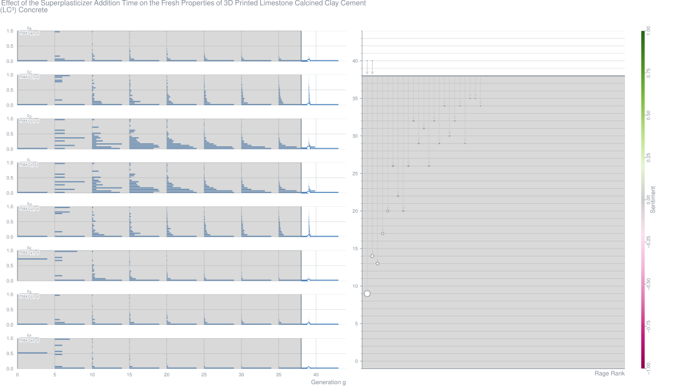
Design-Optimization of 3D Printed Concrete Elements Considering Buildability (2023-08)
AbstractIn this paper, we propose an integration of 3D concrete printing buildability requirements into a formal structural optimization problem. The aim is to enable the design of a structural element while balancing between its performance as a load-bearing element and its stability during the printing process. Physical buildability is quantified by stress constraints imposed on the fresh concrete, whose time-dependent strength is determined according to a rheological material characterization. This is complemented by geometric buildability that is achieved by imposing constraints on the overlap between layers. The output of optimization is the shape of the structure and the time instance at which each layer is deposited. Several prototypes were printed for verifying the numerical buildability predictions, showing acceptable quantitative agreement between theory and experiments. A critical trade-off between structural performance and buildability is exposed, that emphasizes the need for further development of holistic methodologies that integrate structural design, material design and tooling limitations.Metrics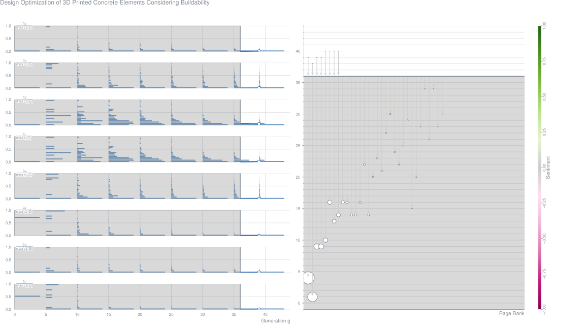
A Systematic Review of Life Cycle Assessments of 3D Concrete Printing (2023-08)
AbstractThe construction industry plays a crucial role in shaping our built environment, and it is imperative to adopt more sustainable and innovative practices, technologies, and tools to minimize the environmental impact. Recently, 3D printing technology has emerged as the main element of the fourth industrial revolution, Industry 4.0 which offers numerous benefits in manufacturing, including complete design freedom, savings in materials and time, enhanced efficiency, and so on. This novel technology is positively impacting various industries, including automotive, aerospace, biomedical, and now the construction industry as well. The present study aims to investigate the ecological impacts of 3D concrete printing (3DCP) by conducting a comprehensive literature review of the published articles that focused on the life cycle assessment of 3DCP-processed units. The objective was to identify current trends, areas of study that require further attention, and opportunities to lower energy consumption and environmental impacts. The literature review found that 3DCP associates with a significant reduction in global warming potential when compared to traditional construction using ordinary Portland cement-based concrete. From the life cycle analysis for 3D printed concrete performed in some articles, this review has identified opportunities to enhance the durability of 3DCP by using non-traditional materials. Additionally, improving the energy efficiency of the printing system and optimizing the structural design of printed structures can further enhance their environmental performance.Metrics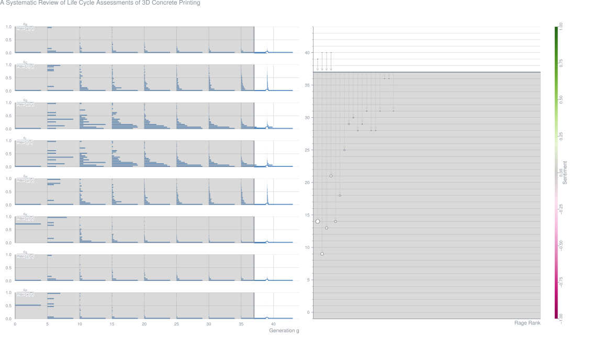
Modelling the Temperature Gradient in 3D Concrete Printing (2023-08)
Wegdan El Nadoury,
Ashraf Mohamed Journal Article – Ain Shams Engineering Journal
AbstractThree-dimensional concrete printing (3DCP) is a feasible substitution for conventional concrete, principally due to its capability to improve efficiency and diminish the ecological effect of the building industry. Notwithstanding its recognition, insufficient research has quantitively studied the temperature gradient during hydration in 3DCP. In this paper, a finite element model (FEM) is proposed to investigate the thermal performance of a 3Dprinted concrete. The model takes into account the heterogeneity in the generated heat of hydration depending on the time elapsed between layers. Thermal conduction between layers and thermal convection to the surrounding are also considered in the proposed model. The model was validated by experimental work. The effect of the printing technique on thermal properties is elaborated through a comparison with conventional cast concrete for a structural element with similar dimensions. Results show that the peak temperature and temperature difference in 3DCP is lower than in conventional casting by 8 ◦C and 15 ◦C respectively. Thus, the 3DCP is less susceptible to cracking due to thermal stresses.Metrics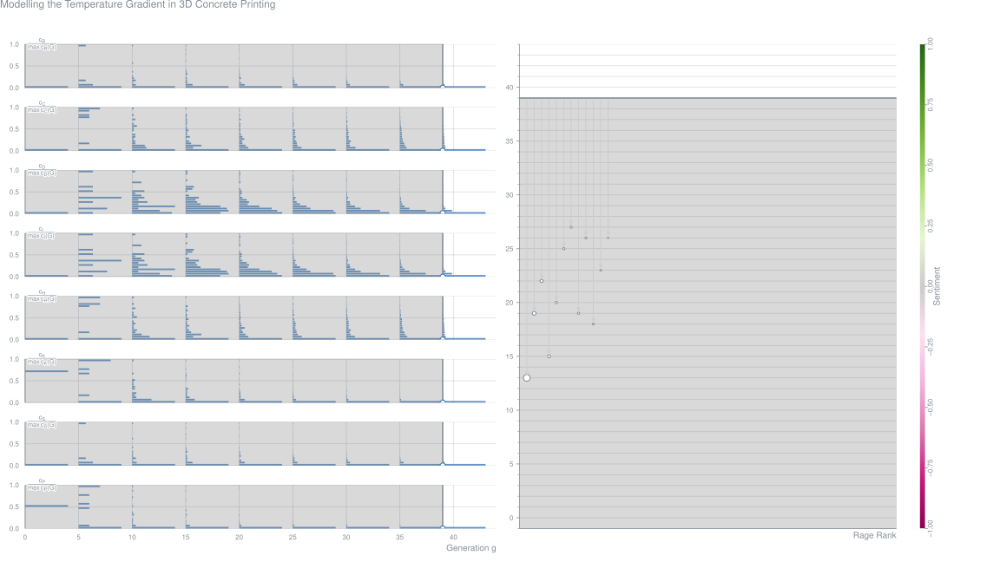
Evaluation of the Mechanical Behavior of Representative Volumetric Elements of 3DCP Masonry-Mixtures with Partial Replacement of Cement by Limestone-Filler and Metakaolin (2023-08)
AbstractThe analysis of 3D printing concrete (3DCP) mixtures as representative masonry volumetric elements (RVE-3DCP) is ideal to better understand the behavior of 3DCP within the masonry typology. Nevertheless, analyzing small pieces might not accurately represent the actual behavior of 3DCP in the intended application, especially as masonry in this specific scenario. This study aims to develop representative 3DCP masonry volumetric elements (blocks, prisms, and mini-walls) produced with 3DCP mixtures with up to 50% cement replacement by limestone filler (LF) and metakaolin (MK). The mechanical behavior of the RVE-3DCP and the small-sized specimens (cubes and prisms) was evaluated in comparison with the pieces made with the reference mixture, only with cement. The RVE-3DCP were also compared to the elements of the hollow concrete block structural masonry system. The properties in the fresh and hardened states were investigated to analyze the influence of LF and MK on the 3DCP mixtures. The results showed that there is a reduction in the compressive strength of RVE-3DCP when compared to the compressive strength of small-sized 3DCP specimens, showing that these cube and prism specimens may not be the ideal typology to analyze the real behavior of 3DCP. Furthermore, these 3DCP mixtures with LF and MK obtained better efficiency indexes about cement consumption per MPa achieved, which proves the good performance of mixtures with reduced cement consumption in the ability to withstand the compressive stresses of 3DCP masonry with sealing or structural function. In addition, the RVE-3DCP in block and prism size may be suitable for analysis of the mechanical behavior of 3DCP mixtures as it represents a reduced geometry of the masonry.Metrics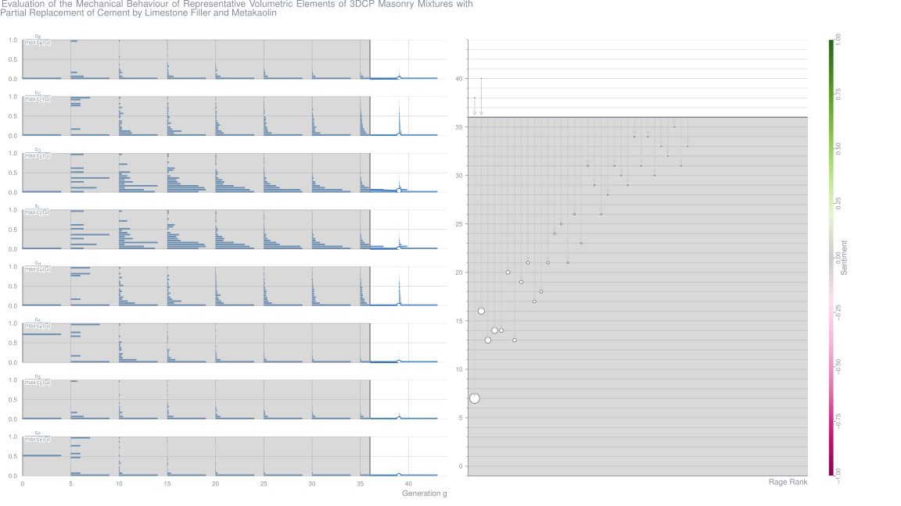
3D Printed Mortar with High Alumina-Cement as Alternative Solution for Standard Materials Used for 3D Printing (2023-08)
Abstract3D printing of concrete is an innovative technology that is revolutionizing the construction industry. This advanced process allows the precise and automated production of durable concrete structures using cement-based binders for printing. 3D printing of concrete offers many advantages. First, the process makes it possible to create custom shapes and patterns that are difficult to achieve with traditional construction methods. In addition, the precise control of 3D printing can minimize the use of materials, which translates into cost savings and reduced environmental impact. Aluminum cement as a component of the binder causes a significant acceleration of the setting time, which can be useful in 3D printing technology. The research presented in the article analyzes the possibility of using aluminum cement to modify a concrete mixture for printing. The research shows that with the right composition of superplasticizer and binder, it is possible to achieve the required setting times.Metrics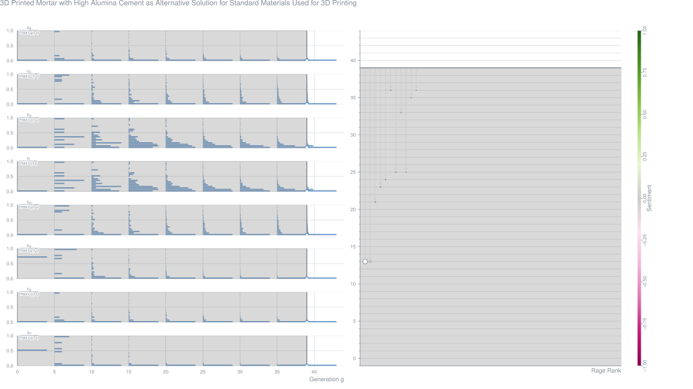
3D Printable Strain-Hardening Cementitious Composites (3DP-SHCC): Tailoring Fresh and Hardened State Properties (2023-08)
AbstractWith the introduction of 3D concrete printing, research started on how to include reinforcement in 3D printed structures. Initial studies on the implementation of strain hardening cementitious composites (SHCC) as selfreinforcing printable mortars have shown promising results. The development of this new type of SHCC comes with additional challenges. Where SHCC by itself is already a complex material engineered to achieve specific micromechanical behaviour under tensile loading, its application in 3D printing techniques imposes even more requirements - the so-called ‘printability’ requirements. The question that rises for the development of this new material is how to achieve printability without losing strain hardening capacity. This paper investigates the influence of raw materials and additives, such as silica fume, limestone powder, viscosity modifying agents and water, on the fresh and hardened mechanical properties of printable SHCC, by improving on a previously developed mixture. The fresh material mixtures were subjected to slump flow tests to analyse their applicability for 3D printing. In hardened state, the mixtures were tested on their compressive strength and flexural strength to assess their potential for strain hardening capacity. Finally, two mixtures were selected for printing. The mixtures were assessed on print quality and buildability by the deployment of a buildability test. Furthermore, the printed elements were mechanically tested at 28 days, on compressive strength, flexural strength and uniaxial tensile strength and strain. It was concluded that the silica fume content and water to solid ratio are relevant variables for 3DP-SHCC optimization. The study has yielded two 3DP-SHCC mix designs that display significant strain hardening capacity and good printability properties.Metrics
Bond Properties and Anisotropy Performance of 3D Printed Construction and Demolition Waste-Based Geopolymers: Effect of Operational- and Material-Oriented Parameters (2023-08)
AbstractThis study investigated the bond performance of printed construction and demolition wastes (CDW)-based geopolymer, providing utilization of CDW in green materials through high tech-manufacturing methodologies. Considering the requirements of three-dimensional-additive manufacturing (3D-AM), the effects of operational and material-oriented parameters on mechanical performance were examined by conducting compressive strength, triplet shear, direct tensile, and diagonal tension tests. Anisotropy performance (perpendicular, lateral, and parallel), printing time intervals (0, 15, 30, 60-min.) between two consecutive layers, material aging time (0, 30, 60, 120-min.) of CDW-based materials, manufacturing methodologies (cast, horizontal- and vertical-printed) were evaluated on the printed specimen. The study showed that the tests conducted on masonry structures could be used on the 3D-printed structure as well. An anisotropic behavior in the compressive strength results was obtained by observing a decreasing trend in results from perpendicular to parallel and, parallel to lateral loading directions. Increasing printing time interval had a negative influence on the compressive strength of CDW-based geopolymers and anisotropy performance was mitigated in a 60-min printing time interval. Although bond strength decreased with raised printing time intervals, similar bond strength values were recorded for 30-min and 60-min printing time intervals. Similarly, increased material aging time caused decrement in bond strength, yet comparable bond strength was obtained for specimen printed with 60-min and 120-min aged mixture. According to the results, printing time intervals showed more prominent effects on bond strength compared to the material aging time. The test results indicate that vertical-printed specimens demonstrated similar mechanical performance with cast specimens, whereas horizontal-printed specimens exhibited slightly weaker performance compared to those.Metrics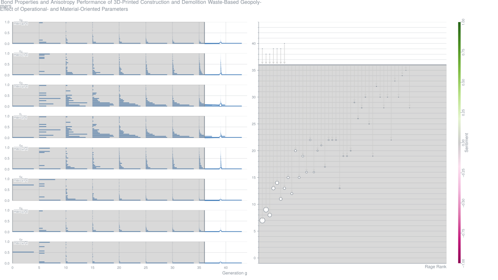
Rheology and Pumpability of Mix Suitable for Extrusion-Based Concrete 3D Printing: A Review (2023-08)
Spandana Paritala,
Kailash Singaram,
Indira Bathina,
Mohd Khan,
Sri Jyosyula Journal Article – Construction and Building Materials, Vol. 402, pp. 132962
Abstract3D printing of concrete is a rapidly growing additive manufacturing technology, bringing advantages like freedom of geometry, formwork-free construction, reduced construction time, and wastage, contributing towards a sustainable built environment. The technology also has the potential to mimic bio-inspired material architectures with enhanced performance. Among the available additive manufacturing techniques, the scalability and the speed of construction motivate the adaptation of extrusion-based concrete 3D printing technology. For conventional concrete pumping, the rheological behaviour and the mix design have been well established. However, for 3D printing, the pumpability of the mix which is governed by its rheology and the flow mechanism has to be viewed in conjunction with the extrudability, shape-retention, and buildability. This study provides a review of significant rheological properties, the effect of various material mixes, and printer configurations on the pumping of conventional as well as printable concrete, and a general comparison between them. The requirements of a pumpable concrete mix based on rheology and the optimal hardened properties for the 3D printing application are discussed. The significant rheological properties affecting the printability of concrete are plastic viscosity, static yield stress, thixotropy, and open time. A detailed review of various factors affecting the pumpability of a printable concrete mix is presented. The key constituents of a concrete mix affecting pumpability identified here are the type of binder(s), chemical admixture, the inclusion of nano-fillers, aggregate shape, size and grading, and aggregate-to-cement ratio. The range of yield stress and plastic viscosity are discussed for the 3D printable mixes. Recommendations are provided to improve the process and quality of 3D concrete printing. State-of-the-art applications and the potential of this technology to manufacture natureinspired material architectures with superior toughness is highlighted.Metrics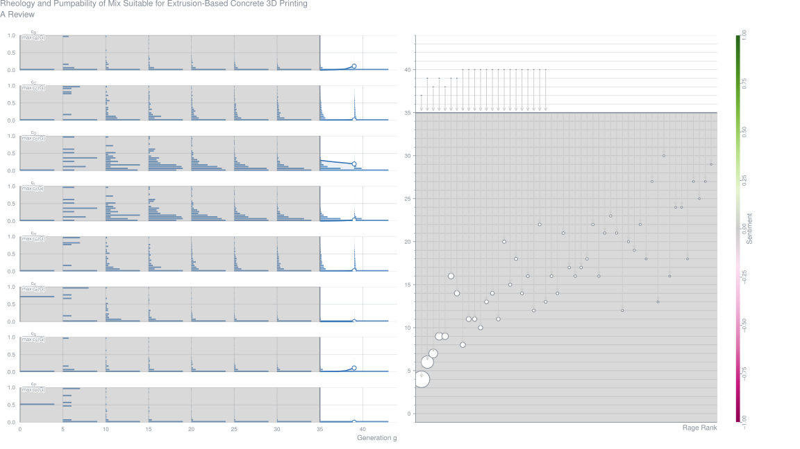
Rheology-Assessment of Mortar-Materials for Additive Manufacturing (2023-08)
AbstractThis review article discusses the relevant rheological tests to evaluate the properties of compositions applied to the 3D printing of concrete (3DCP). These materials must rapidly develop rigidity and resistance, avoiding the collapse of the printed structure, with suitable buildability and other state properties, such as extrudability. A good balance must be maintained between properties and rheological parameters, such as yield stress and viscosity. Cohesion, Young's modulus, and thixotropy are also among the parameters used in these evaluations. The rheological tests addressed are the rheometer, direct shear test, uniaxial unconfined compression test, and penetration test. Their limitations must be taken into account to obtain accurate values of the rheological parameters. It was found that the most used test is the rheometer, and the test that needs to be further studied is the penetration test. Hence, it is recommended to search for a more expeditious method related to the rheological assessment to facilitate obtaining the associated parameters in a simple way.
Quantifying the Impact of Concrete 3D Printing on the Construction Supply Chain (2023-08)
Ayyagari Ramani,
Qian Chen,
Borja de Soto Journal Article – Automation in Construction, Vol. 155
Abstract3D printing technology has demonstrated great potential in reducing the complexity of managing a construction supply chain (CSC). This paper investigates the consequences of incorporating 3D printing (3DP) in a traditional construction supply chain when using a two-story office building project in the UAE context as the basis for the investigation. The following steps were implemented: (1) developed frameworks and processes for the traditional construction supply chain (T-CSC) and the construction supply chain with 3D printing (3DP-CSC), (2) simulated the processes using the experts’ experience data regarding the required effort in terms of construction resources to design and build a standard office building project, and (3) obtained and analyzed simulation results to compare the two CSCs. It was observed that 3DP-CSC experiences a 21% higher cumulative effort and a 6% reduction in the production rate to complete the project when compared to T-CSC. The simulation results should not be directly extrapolated or generalized for different CSCs in different sizes or types but should be considered an integral part of construction innovations. Additional simulations will be conducted in future work to demonstrate the performance of 3DP-CSC for projects with complex geometries.Metrics
A 2D Numerical Model of 3D Concrete Printing Including Thixotropy (2023-08)
AbstractAdditive Manufacturing (AM) techniques are increasingly drawing interest in the construction sector since they can offer new architectural possibilities while improving the accuracy and the sustainability of the construction process. Among these techniques, 3D Concrete Printing (3DCP) is probably the most established and its future role in lowering the environmental impact of the building industry is under deep investigation. 3DCP main advantages, which are linked to the capacity of building optimized structural shapes, without the need for formworks and in very short times, are however still limited by the lack of knowledge and regulation. It is therefore necessary to provide designers with more advanced design tools to fully unlock the potential of 3DCP. This work presents a numerical model of 3DCP, which realistically simulates the extrusion and layer deposition phases. The model assumes that fresh concrete can be treated as a homogeneous viscous fluid. The problem is then governed by the Navier-Stokes equations, which are solved in a Lagrangian framework with the Particle Finite Element Method (PFEM). A Bingham law, modified to include thixotropic effects, is employed to accurately reproduce the material rheological behaviour at the early ages. The model is then applied to simulate a simple printing scenario, for which the fundamental experimental data is available in the literature, to assess the role of thixotropy in the printing process. The results show how thixotropy has a crucial effect in limiting the overall shape deformation and in avoiding the early compression failure of the bottom layers. In this view, the developed model can be applied to optimize the printing parameters with respect to the rheological properties and could also suggest how to improve the toolpath and the printing times for a given structure.Metrics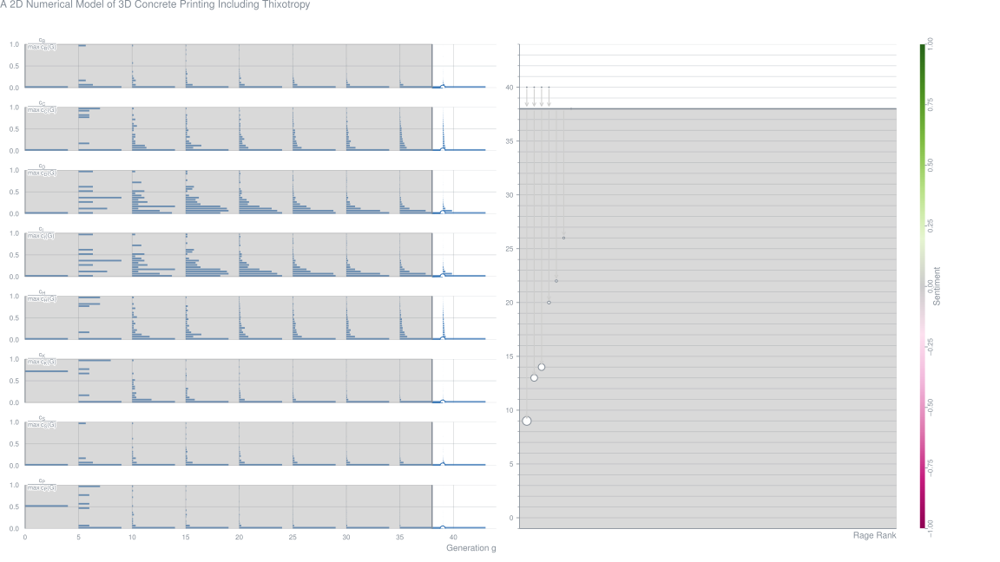
A Review of 3D Printing of Geopolymer Composites for Structural and Functional Applications (2023-08)
Fatheali Shilar,
Sharanabasava Ganachari,
Veerabhadragouda Patil,
B. Bhojaraja,
T. Yunus Khan,
Naif Almakayeel Journal Article – Construction and Building Materials, Vol. 400, pp. 132869
AbstractThe 3D printing allows for the automated and quick building of structures, drastically reducing the time and labour necessary for traditional construction methods. An extensive analysis of more than 100 + articles aimed to present a thorough summary of the present research status on 3D printing of geopolymer substances, investigating different factors, including printing methods, material traits, and geopolymerization procedures. The fresh and mechanical properties result of 3D geopolymer composites are reviewed and represented in kernel density, radar, quantile–quantile plots, and multi-Y analysis plots for various binder ratios. The effect of Si/Al, activators, and factors that influence the acceleration of geopolymerization of 3D-based geopolymers is discussed. Different types of 3D printing machines, along with layer adhesion thixotropy and its relation to printability, printing speed, adhesion of layers, and storage condition, are studied, as are their mechanisms. Using pozzolanic materials in the chemical reaction between quicklime and silicate materials enhances the structural performance of the geopolymer material, resulting in superior properties. This review's findings and suggestions attempt to lay the foundation for future study in this field, which offers assistance in building 3D-printed composite materials with the necessary sustainability.Metrics
Comprehensive Design Methodology for 3D Printing Mortars (2023-08)
AbstractDigital technologies and automation processes are boosting additive manufacturing of cementitious materials, known as 3D printing of mortars and concretes, to build prefabricated and on-site concrete structures, taking advantage of increasing productivity and geometric freedom and of reducing manpower, waste and formwork. However, in additional to the mechanical and time-dependent performance, the following requirements must be assured in fresh state to allow the 3D printing process: extrudability, shape retention, constructability and open time. The global interest by this technology justifies the large number of works that are being nowadays developed. However, despite the successive progress, the published researches are mainly based on empiric material formulation, with high cement/aggregate ratios and consequently with high content of Portland cement, which contributes to prejudice the carbon footprint and the sustainability of the solution. The present research aimed to develop a design methodology for eco-efficient 3D printing mixtures, with reduced cement content and consequently lower cost effective. An experimental program was firstly developed to quantify the influence of the variation of the following parameters on the abovementioned fresh requirements: grade of cement strength; binder/aggregate ratio; aggregate size proportioning, including filler; w/c ratio and; superplasticizer type and proportion. The results analysis allowed to achieve high correlations between those parameters and the properties that affect the 3D printing requirements. The comprehensive developed methodology, based on those correlations, was proven to reliably allow designing eco-efficient mixtures, with binder/aggregate ratio of 1/2 to 1/2.5 that fulfil the necessary requirements, being tested and also validated in 3D printing equipment.Metrics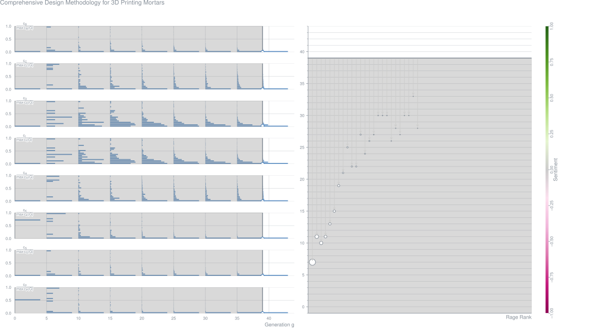
Anisotropy in Additively Manufactured Concrete Specimens Under Compressive Loading: Quantification of the Effects of Layer-Height and Fiber-Reinforcement (2023-08)
AbstractThis paper analyzes the effect of print layer heights and loading direction on the compressive response of plain and fiber-reinforced (steel or basalt fiber) 3D printed concrete. Slabs with three different layer heights (6, 13, and 20 mm) are printed, and extracted cubes are subjected to compression (i) along the direction of printing, (ii) along the direction of layer build-up, and (iii) perpendicular to the above two directions. Digital image correlation (DIC) is used as a non-contact means to acquire the strain profiles. While the 3D printed specimens show lower strengths, as compared to cast specimens, when tested in all three directions, this effect can be reduced through the use of fiber reinforcement. Peak stress and peak strain-based anisotropy coefficients, which are linearly related, are used to characterize and quantify the directional dependence of peak stress and strain. Interfaceparallel cracking is found to be the major failure mechanism, and anisotropy coefficients increase with an increase in layer height, which is attributable to the increasing significance of interfacial defects. Thus, orienting the weaker interfaces appropriately, through changes in printing direction, or strengthening them through material modifications (such as fiber reinforcement) or process changes (lower layer height, enables attainment of near-isotropy in 3D printed concrete elements.Metrics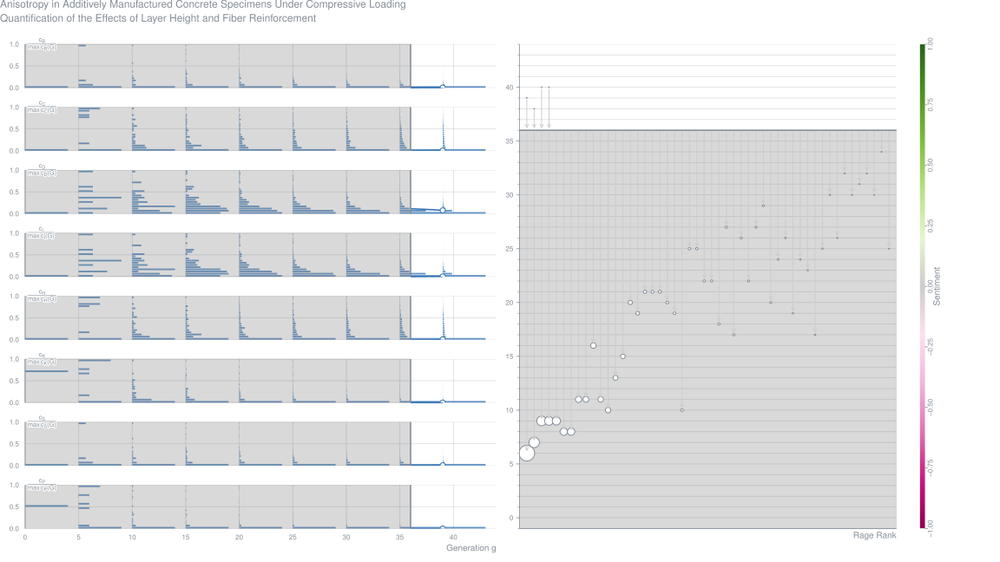
A Review of 3D Printing Technology: The Future of Sustainable Construction (2023-08)
Toiba Tabassum,
Ajaz Ahmad Mir Journal Article – Materials Today: Proceedings
AbstractThe construction industry has traditionally been slow, labour-intensive, and faced challenges in sustainability. However, recent advancements in 3D concrete printing (3DCP) offer promising solutions for faster, more precise, and sustainable construction practices. This critical review examines the developments and advances in 3D printing of concrete, as well as the challenges and future potential of this technology in sustainable construction. Our study highlights the advantages of 3D printing technology, such as reducing costs, materials, and time, enhancing safety, and minimizing environmental pollution. Moreover, 3D printing enables the creation of complex and intricate designs that were previously challenging to achieve through traditional methods. To address sustainability concerns, we explore eco-friendly alternatives like high-volume fly ash, geopolymers, and recycled glass aggregates that can be utilized in 3D printing. These materials not only reduce environmental impact but also enhance the long-term strength performance of building components. While discussing the different 3D printing methods, including extrusion and powder-based techniques, we emphasize the potential applications of each method in sustainable construction. In conclusion, 3D printing technology has the potential to transform the construction industry by offering low-cost, efficient, and environmentally responsible solutions. However, challenges like job implications and structural stability must be addressed through further research.Metrics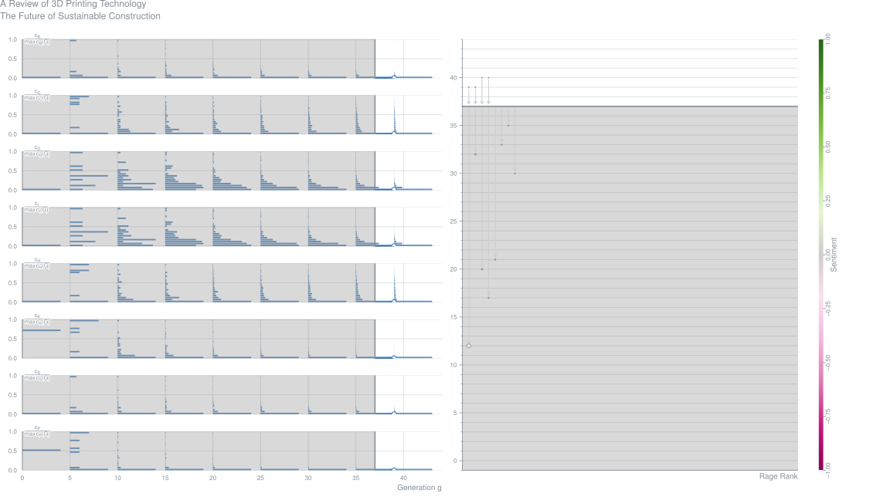
Reinforcement of 3D Printable Earth-Based Mortar with Natural Textile-Material (2023-08)
AbstractEarth-based building materials, used in the construction industry for centuries, have gained renewed interest due to the increasing environmental threats posed by cement-based materials. These earth-based materials offer many advantageous features such as affordability, easy accessibility, recyclability resulting in zero waste, indoor climate control, and breathability, making them indispensable for sustainable development. The emergence of 3D printing technology has brought revolutionary benefits to the construction sector, enabling rapid, cost-effective, and eco-friendly production while offering almost unlimited design possibilities. However, the challenge of reinforcement remains a critical issue that requires solutions in 3D printed technology in construction. Mainly, the complexities of 3D-printed geometries make traditional construction reinforcement methods more challenging to apply. This study proposes a technique to address the reinforcement challenges of 3D printing technology using natural materials. Earth-based samples produced through 3D printing were reinforced with textiles, specifically natural jute fabric. The effectiveness of this approach was investigated, focusing on beam-shaped samples designed for experimental studies. The samples comprised a 3D printable mixture containing only clay, earth, and sand, reinforced with natural jute fabric textile. The findings of this research emphasise the positive impact of reinforcing 3D printable earth-based composites with natural jute fabric textiles, resulting in a structural material with enhanced compressive strength, good tensile strength, and ductile behaviour.Metrics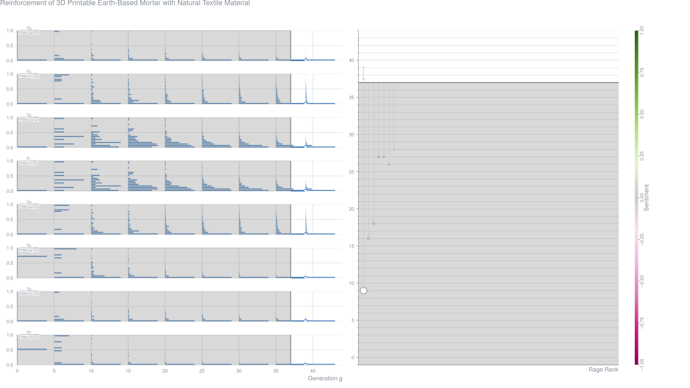
Nano-Modified Materials for New Construction Technologies: Self-Compacting and 3D Printing (2023-08)
AbstractSelf-compacting concrete (SCC) and 3D printing (3DP) have become two of the most innovative and promising construction technologies for the XXI Century Architecture with cement-based systems (CBS). Both applications require specific fresh material properties, fluid in the first case and firm in the second one. However, material cast-in-place in both technologies shows similar issues to be addressed regarding material fresh state rheology and its control. The main rheological parameters to consider for fulfilling cast-in-place requirements are shear yield stress, viscosity and structural build-up. Besides, mechanical properties as compressive yield stress, Young modulus and critical strain must also be considered at early age, when setting begins. Nano-modification can be the answer to modify fresh state rheological and early age mechanical parameters of CBS. The aim of this study was the evaluation of CBS rheological behaviour with nanocomponents and VMAs for SCC and 3DP applications. The combined use of nanocomponents (NC), as nanoclays and nanosilica, and viscosity modifying admixtures (VMAs) has shown the ability to tune CBS rheology. Moreover, the addition of a high-range water-reducing admixture (HRWRA) is essential to produce CBS with an appropriate consistency and workability, although some incompatibilities with other components have been described. CBS rheological and mechanical parameters can be studied using specific experimental test methods, depending on the properties and the consistency required by each technology and application. Nano-modified CBS showed an increase of shear yield stress while the addition of VMAs increased viscosity. The combination of both components produced synergetic effects in the material over time, overcoming issues observed for both technologies.Metrics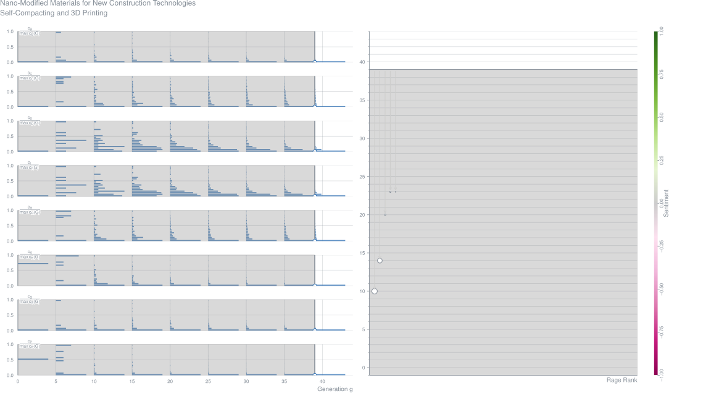
Influential Factors on Mechanical Properties and Microscopic Characteristics of Underwater 3D Printing Concrete (2023-08)
Yang Wang,
Liu-Chao Qiu,
Yan-Ye Hu,
Song-Gui Cheng,
Yi Liu Journal Article – Journal of Building Engineering, Vol. 77, pp. 107571
AbstractUnderwater 3D Printing Concrete (U3DPC) technology can be a promising approach to address the challenges of renewable marine energy and coastal protection. Conducting extensive research on the mechanical properties of U3DPC is crucial for its successful implementation. This study investigates various factors, including printing environment, construction methods (mold-cast and printing), curing age, and material composition, regarding their significance on the mechanical properties of U3DPC. The compressive strength, anisotropy, interlayer bonding, and interface microstructure are evaluated. The research findings reveal that compared to casting specimens in air, the printing method and water environmental factors result in approximately 20% and 15.1% reduction in the compressive strength of U3DPC, respectively. U3DPC exhibits different anisotropic variations compared to specimens printed in air, attributed to weak interlayer bonding interfaces caused by external water. The influence of material components on the interlayer bonding strength of U3DPC has a critical threshold that should not be exceeded; otherwise, it weakens the interlayer bonding. The variation in fine aggregate types and fibers leads to changes in interlayer interface roughness, where excessive roughness captures more ambient water due to the “dog-tooth overlapping” structure, thereby reducing the adhesive capacity. The pore distribution reveals the underlying mechanism of how interface roughness affects interlayer bonding.Metrics
Damage-Rheology Model for Predicting 3D Printed Concrete Buildability (2023-08)
Qing Wang,
Xiaodan Ren,
Jie Li Journal Article – Automation in Construction, Vol. 155, pp. 105037
AbstractInsufficient buildability during printing can result in structural instability of three-dimensional (3D) printed concrete. A damage-rheology model was developed to predict such structural failure by simulating the early-age behavior of 3D printed concrete. The model captures essential characteristics of early-age concrete, including structural build-up, softening damage, irreversible deformation, and creep effect. Based on continuum damage mechanics, the model integrates the damage-plasticity theory and the Burgers model. A time-dependent thixotropic model is used to characterize the structural build-up behavior, considering the evolution of material properties as functions of the structural parameter. The model is systematically validated by comparing its predictions with uniaxial creep, straight-wall printing, and hollow-cylinder printing tests. The study investigates the effect of early-age creep on structural responses. Numerical results demonstrate the ability of the model to accurately predict the buildability of early-age 3D printed concrete.Metrics
Characteristics and Mechanism of the Particle-Migration Subject to the Shear Flow of Concrete Flow Under Pressure (2023-08)
Xiangyu Xie,
Xuemei Liu,
Faxing Ding,
Lihai Zhang Journal Article – Journal of Building Engineering
AbstractThe concrete flow under pressure highly depends on the formation of a lubrication layer between the concrete mass and the pipe wall. Though it is widely believed that particle migration under shear flow influences the formation of this layer, the exact mechanism remains unclear. Therefore, a fully coupled computational fluid dynamic - discrete element method (CFD-DEM) model is developed to investigate the dynamic behaviour of the aggregates within the pipe flow and validated via computed tomography (CT) study and aggregate phase segmentation. The characteristics and influencing factors of the particle migration process is examined by the validated model. The sub-spheres method is employed to accurately model the aggregate shapes in the model. It reveals that the uneven distribution of particle collision frequency contributes to radial particle migration and the subsequent formation of the lubrication layer. The extent of particle migration is found to depend on the pipe size, but independent on the flow rate. The methodology and findings of this paper will also be useful for three dimensional (3D) printing concrete.Metrics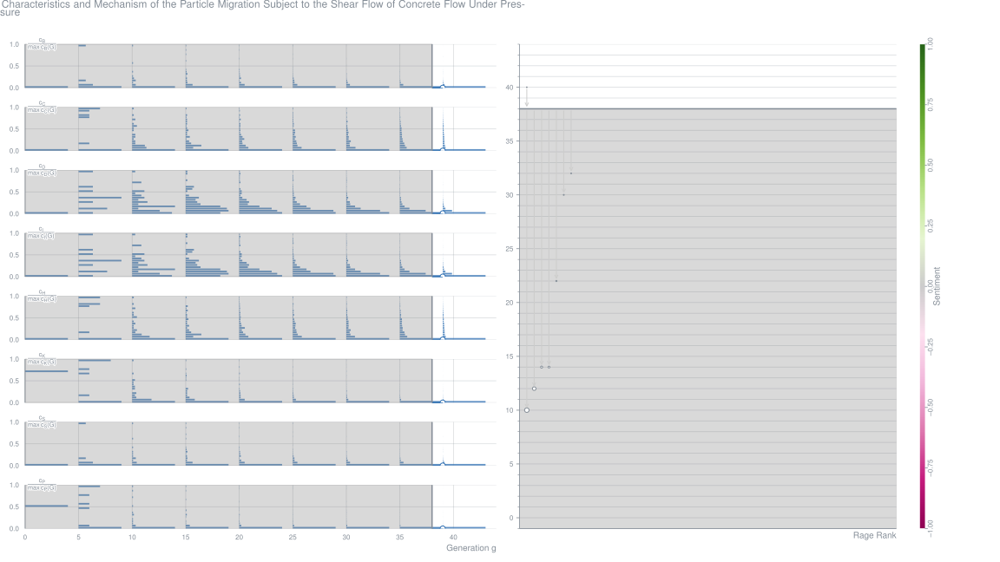
3D Auxetic Cementitious-Polymeric Composite Structure with Compressive Strain-Hardening Behavior (2023-08)
AbstractA composite can have properties much better than the components it is made of. This work proposes a threedimensional auxetic cementitious-polymeric composite structure (3D-ACPC) which incorporates 3D printed polymeric shell with cementitious mortar. Uniaxial compression experiments are performed on the 3D-ACPC to study their quasi-static stress-strain response. Experimental results show that the created composite structure can simultaneously overcome the brittleness of conventional cementitious material and the low compressive strength of 3D printed polymeric cellular shell. Therefore, the 3D-ACPC exhibit compressive strain-hardening behavior ensuring high energy absorption ability. In addition, it is found that structural anisotropy and the shell printing direction have significant impact on the stress-strain response of the 3D-ACPC. Moreover, due to the lightweight cellular structure, the 3D-ACPC shows significantly enhanced specific energy absorption compared to conventional cementitious materials and polymeric cellular materials. To this end, the developed 3D-ACPC has great potential to be used in engineering practice, such as protective structures.Metrics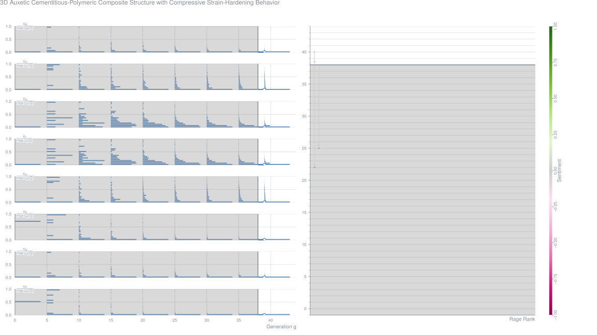
Calcium Leaching of 3D Printed Cement-Paste Exposed to Ammonium Chloride Solutions (2023-08)
Huashan Yang,
Yujun Che,
Jie Luo Journal Article – Sustainability, Vol. 15, No. 17, pp. 12688
AbstractUnderstanding the degradation of 3D-printed cement paste (3DPC) is essential to evaluate changes in the long-term durability of concrete structures subjected to aggressive water. However, the degradation mechanism of 3DPC has yet to be reported, as the microstructure and pore characteristics of 3DPC are very different from those of its cast counterparts. This work studies the performance anisotropy of 3DPC due to calcium leaching to investigate the degradation mechanism. Samples with aggregate micro fines (AMF) and fly ash (FA) were prepared. A 6 mol/L NH4Cl solution was used in the accelerated experiment. At specific leaching durations, performances were tested on the samples in different leaching directions. The performance anisotropy of 3DPC exposed to aggressive water was investigated by comparing the changes in bulk density, water absorption, leaching depths, and compressive strength in different leaching directions. X-ray diffraction (XRD), differential thermal gravity-thermogravimetric (DTG−TG), and mercury intrusion porosimetry (MIP) were used to characterize the changes in hydration products and pore structure in different leaching directions. The results show that the performances of 3DPC in aggressive water have a significant anisotropic behavior. The evolution of pore defects and hydration products mainly governs the performance anisotropy of degraded 3DPC. The remaining hydration products of the surface of 3DPC leached in the Z direction are fewer than the other two directions because calcium ions leached in the Z direction are difficult to compensate through weak interfaces between layers. The test results clearly show that the calcium leaching mechanism of 3DPC in aggressive water is directly influenced by the hydration products, such as portlandite (CH) and C-S-H, and the pores. The current study may help us understand the degradation mechanism of 3DPC to assess its durability performance anisotropy.Metrics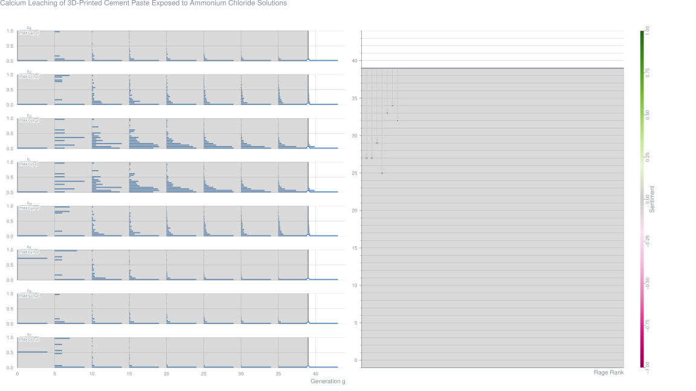
Development of 3D Printable Engineered Cementitious Composites with Incineration-Bottom-Ash for Sustainable and Digital Construction (2023-08)
AbstractThis study aims to develop 3D printable engineered cementitious composites (3DPECC) with incineration bottom ash (IBA) for the enhancement of sustainability. The impacts of using IBA to substitute aggregate (0%, 20%, 40%, and 60% by volume) on the fresh properties, hydration kinetics, and hardened properties of 3DPECC were investigated. The 3DPECC incorporated IBA was firstly tailored for 3D printing by the optimization of fresh properties. The results show that the addition of IBA enhances hydration degree while leading to a porous IBA in the matrix. Due to the enhanced hydration degree, printed specimens with 20% IBA substitution exhibit improved tensile strength (6.19 MPa), compressive strength (50.47 MPa), and flexural strength (22.60 MPa) compared to that of printed specimens without IBA. Due to the porous IBA, printed specimens with 60% IBA substitution reduce 14.9%, 1.5%, and 14.5% on the tensile, compressive, and flexural strength, respectively, compared to printed specimens with 20% IBA substitution. Sustainability analysis reveals that 3DPECC with 60% IBA substitution reduces 1.27 kg/m3 and 14.74 $/m3 on embodied carbon and cost, respectively, compared to that of 3DPECC without IBA. The findings reveal that recycling IBA in 3DPECC is a feasible solution to facilitate municipal solid waste management and sustainable construction.
Behavior of 3D Printed HPC Plates with FRP-Grid-Reinforcement Under Bending (2023-08)
AbstractHigh-performance concrete (HPC) has become increasing popular in structural engineering. Capitalizing the advanced construction technology of 3D concrete printing (3DCP) and merits of HPC, structures with various profiles could be designed and constructed easily. As the mechanical properties of 3D printed concrete may be worse than the corresponding concrete cast by the conventional technology, this study proposes to evolve flexible fiber-reinforced polymer (FRP) grid as reinforcement for 3D printed HPC plates. Twelve plates were tested to explore the effects of the loading direction and fabrication type on the flexural behavior of FRP grid reinforced HPC plates. The results showed that the performance of the 3D printed HPC plates can be considerably enhanced owning to the FRP grid reinforcement. Additionally, the μCT-scanned images show that the pores between deposition layers were elongated due to the movement of the nozzle during printing, and the pores were stretched in the printing direction. The flexible FRP reinforcement may allow 3D printing of FRP reinforced concrete elements in the future.Metrics
Advanced Measurement Techniques for Plastic Shrinkage and Cracking in 3D Printed Concrete Utilising Distributed Optical Fiber Sensor (2023-08)
AbstractDue to the absence of formwork, 3D-printed concrete (3DPC) suffers from high plastic shrinkage and cracking risks at an early age. Compared with conventional cast concrete, 3DPC has a unique layered structure and irregular shape of elements, which causes the uneven shrinkage strains distribution that cannot be fully characterised by traditional methods. This study developed a novel method that aims to measure the plastic shrinkage of 3DPC and monitor the cracking risks in the early stage with the aid of distributed optical fiber sensors (DOFS). The feasibility of using the optical frequency domain reflectometry to measure the plastic shrinkage of 3DPC was experimentally studied, and the coefficient of variation of the results was between 6.99% and 8.05%. The accuracy of the plastic shrinkage obtained by the DOFS method was validated by comparing with the image processing method. Besides, this advanced measurement technique provided multiple functions, which could not only detect the location, width, and development of cracks, but also predict the occurrence of cracks. The utilisation of DOFS method to measure the strains of 3DPC at various positions along the fiber direction has good potential to explore the short and long-term properties of 3DPC and monitor the structural health of 3DPC structures.Metrics
Surfactants to Enable Quick Nozzle Mixing in 3D Concrete Printing (2023-08)
Nan Zhang,
Jay Sanjayan Journal Article – Cement and Concrete Composites, Vol. 142, pp. 105226
AbstractQuick Nozzle Mixing is a technique to overcome the contradictory rheological requirements of buildability and pumpability in 3D concrete printing. The challenge is to achieve a uniform mix in a short mix time. This work presents the mechanism of the mixing process in concrete and investigates the properties of mixing water containing five surfactants. The fresh and hardened properties of concretes made with these surfactants are analyzed. Results show that these surfactants play dominant roles in mixing efficiency, dependent on the mixing duration. These surfactants are ranked according to decreasing wettability as follows: Sodium dodecyl sulphate, Saponified rosin (SR), polyarylether, polycarboxylicether (PCE) and naphthalene sulphonate. These printable concretes mixed with 0.8 wt% PCE for 60 s and SR for 30 s exhibited high levels of homogeneity. The mechanical deterioration due to air incorporation was also discussed.Metrics
Comparison of Printability and Mechanical Properties of Rigid and Flexible Fiber-Reinforced 3D Printed Cement-Based Materials (2023-08)
AbstractSince eco-friendly, labor-saving construction technologies are urgently needed than ever, concrete 3D printing technology has gained increasing attention. However, there are still limited studies focusing on reinforcement techniques for 3D printed cement-based materials (3DPCM) which restrict their applications. Herein, we revealed the differences between the influence of typical rigid and flexible fibers on the printability and mechanical properties of 3DPCM. Printability, including buildability and extrudability, was evaluated via fluidity and shape stability tests and verified by printing experiments. The anisotropy ratio was proposed to assess the anisotropic mechanical properties. Furthermore, the fracture energy and bend-press ratio were adopted to assess the toughness. Results indicate that steel, polypropylene (PP) and polyvinyl alcohol (PVA) fibers all increase the buildability but decrease the extrudability of 3DPCM. Compared to steel fibers, PP and PVA fibers have a greater impact on the printability owing to their entanglement. The alignment and wall effect of steel fiber drastically increase the anisotropy in the compressive strength of 3DPCM. PP fibers also intensify the anisotropy in the compressive strength due to their filling effect. Low content of steel fibers and PP fibers both have limited impacts on the toughness and the anisotropy in flexural strength of 3DPCM. The fracture energy of 3DPCM for the loading direction perpendicular to the interface is higher than that for the direction parallel to the interface. Contrary to PP fibers, samples with steel fibers have higher bend-press ratios once the loading direction is parallel to the interface.Metrics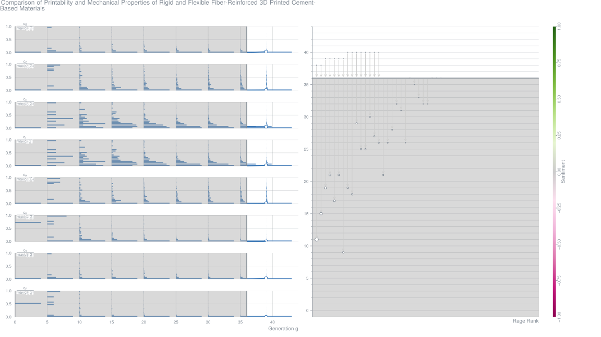
A Bio-Inspired Solution to Alleviate Anisotropy of 3D Printed Engineered Cementitious Composites (3DP-ECC): Knitting/Tilting Filaments (2023-08)
AbstractWidely reported anisotropy in 3D printed cementitious structures has been a primary concern to structural integrity, especially for fiber-reinforced cementitious material, e.g., engineered cementitious composites (ECC). To alleviate the anisotropy present in 3D printed ECC (3DP-ECC), two innovative printing patterns, “knitting” and “tilting” filaments, were proposed, mimicking the natural crossed-lamellar structure of conch shells. 3D spatial paths were designed to allocate tensile/flexural resistance to multiple directions and to create an interwoven interface system to strengthen the structure. Four-point bending tests loading from three different directions were conducted. It was found that knitted and tilted filaments revealed superior or comparable bending performance to cast ECC in two favorable orientations. Furthermore, flexural performance in the weakest orientation was notably improved by knitting and tilting, with up-to-179% increases in flexural strength compared with that of parallel filaments. This novel approach holds great promise in alleviating anisotropy of 3DP-ECC without introducing additional reinforcement.Metrics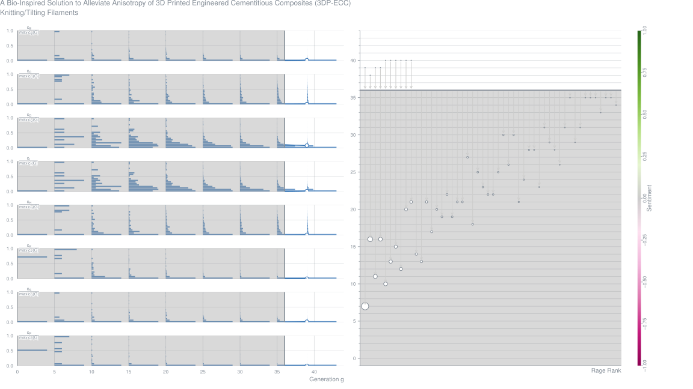
Buildability Modeling of 3D Printed Concrete Including Printing-Deviation: A Stochastic Analysis (2023-08)
Jinggao Zhu,
Xiaodan Ren,
Miguel Cervera Journal Article – Construction and Building Materials, Vol. 403, pp. 133076
AbstractOwing to the formwork-free construction, 3D concrete printing shows great prospects in construction industry. However, this manner also results in non-verified geometric precision, which is prone to generate uncontrolled printing deviations between the actual and designed print paths. To include this in buildability modeling, a process-dependent stochastic method is proposed based on the characteristics of the 3D printing process. Then, a stochastic analysis procedure is developed by Monte Carlo simulation and verified by the 3D-printed concrete (3DPC) cylinder test. Finally, the verified method is applied to the stochastic analysis of 3DPC buildability modeling. By studying two structural shapes and four correlation times, a clear understanding of the influence of printing deviation as well as guidances for the design of 3D printing process are obtained.Metrics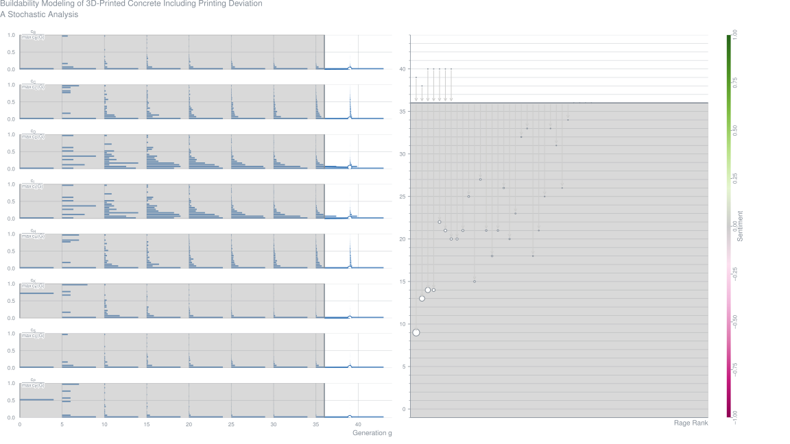
Measurement of the Density of Formed Structures for Concrete 3D Printing (2023-08)
Z. Zuo,
Wouter de Corte,
Y. Huang,
L. Zhang,
Y. Yuan Contribution – Proceedings of the 17th International Conference on Civil, Structural and Environmental Engineering Computing
AbstractAs one of the core parameters of three-dimensional (3D) printing, the density of formed structures directly governs the quality and performance of printed buildings or components. Therefore, it is critical to measure the density during printing. Here, we propose a density measurement system (DMS) and computational method for formed structures during concrete 3D printing (C3DP). The DMS includes a real-time weight monitoring system and software, and a 3D laser scanning system for measuring the volume of the formed structures. The corresponding method introduces parameters such as printing time, mass printing speed and relative density. Several 3D printing indoor experiments were conducted to illustrate the DMS and method. Experimental results show that the density of the formed structures during 3D printing can be measured quickly, quantitatively and with high accuracy. The density of the formed structures ranged from 2016 to 2179 kg/m3, with an average value of 2068 kg/m3. These results can provide a basis for evaluating the uniformity and quality of formed structures, as well as support the monitoring and feedback control of the process parameters during 3D printing, including printing time gap, printing speed, and mass printing speed.